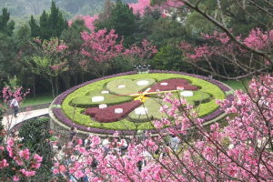
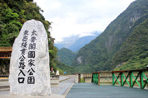

| 國家公園導覽 |

|
| 陽明山國家公園緊臨臺北都會區，全區以大屯火山群彙為主，因火山活動造成的錐狀與鐘狀火山體、火口湖、硫氣孔、地熱與溫泉，具有研究及娛樂價值，受季風影響，植物相兼具高草原、矮草原、闊葉樹林、亞熱帶雨林、雨水生植物群落，孕育臺灣水韭、大屯杜鵑、蝴蝶與鳥類，陽明山公園栽植的櫻花及杜鵑，使本區成為臺北近郊最吸引人的賞花場所。 |
|  |
| 雪霸國家公園成立於民國81年(1992)。雪霸國家公園境內高山林立，景觀壯麗，高差達三千多公尺，以雪山為中心，向四週輻射多支稜脈，但見遠近的山稜蜿蜒伸展，層次分明，地勢崇峻，其中雪山與大霸尖山最具代表性。雪山主峰位於雪山山脈的中部，高3,886公尺，為山脈之最高點，是臺灣的第二高峰，臺灣府誌因其「積雪瑩澈光明晴霽望之，輝白如玉」而名為雪山。 |
| 玉山國家公園位居臺灣中央地帶，為我國第二座國家公園。區內崇山峻嶺，臺灣三千公尺以上百岳名山有三十座位處其中，有氣勢磅礡、雄偉壯麗者，有奇峰俊秀、自成風格者，美不勝收，為一典型的山岳型國家公園。園區內豐饒珍貴的自然人文資源屬全民共享，這個環境最重要是給人們一個與大自然接觸的場所，做為心靈休憩、恢復生機的地方，也是留給後世子孫最美好純淨的樂土。 |
 |
| 太魯閣國家公園橫跨花蓮、南投及臺中，以雄偉壯麗、幾近垂直的大理岩峽谷景觀聞名。沿著立霧溪的峽谷風景線而行，觸目所及皆是壁立千仞的峭壁、峽谷、連綿曲折的山洞隧道等風光。燕子口和九曲洞，是太魯閣峽谷最讓人心動的自然奇觀，也是峽谷最窄的兩段，臨溪側闢有人行步道供遊客漫步欣賞。 |
|  |
| 墾丁國家公園位於屏東縣境內，是我國第一座成立的國家公園，三面環海，同時涵蓋陸域與海域。由於百萬年來地殼運動不斷的作用，陸地與海洋彼此交蝕影響，造就了本區高位珊瑚礁、海蝕地形、崩崖地形等奇特的地理景觀。海底的珊瑚景觀更是繽紛絢麗，為墾丁國家公園妝點出卓絕風貌。 |
| 福建省金門縣古名浯洲，明、清兩代，科甲鼎盛，名將輩出，鄭成功曾駐軍於此，現代更經歷古寧頭戰役及八二三砲戰，以戰地風光、海上公園著稱，金門國家公園分為古寧頭區、太武山區、古崗區、馬山區、復國墩區及烈嶼區，除了戰役紀念史蹟、傳統聚落及文物外，在地質上由花崗片麻岩構成的丘陵地形，自然環境特殊因近大陸邊緣，為候鳥遷徙中繼站，發現199種野鳥，具有研究及解說價值。 |